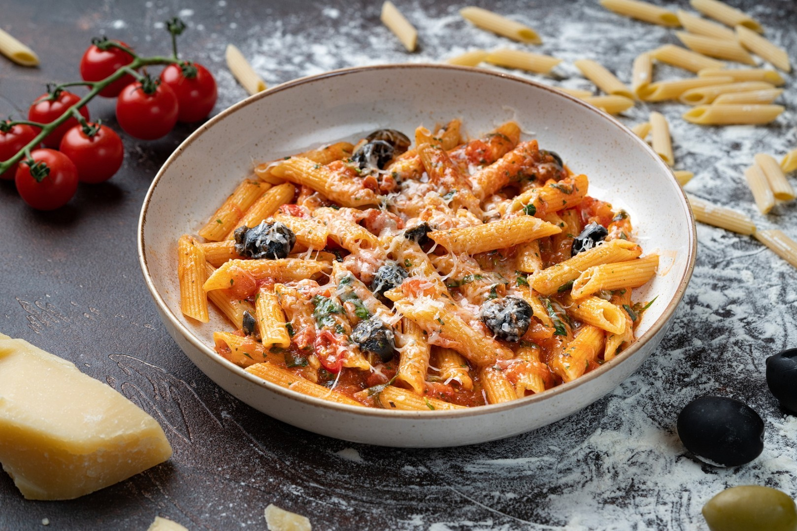

Проголосуйте за будующие блюда!
Вернуться в меню

♡
Паста Аррабьята
Классическая итальянская паста, приготовленная по фирменному рецепту.

♡
Стейк Мачете
Сочный мраморный стейк средней прожарки с розмарином и чесноком.

♡
Цезарь с курицей
Хрустящие листья салата, тёплая курочка и классический соус.